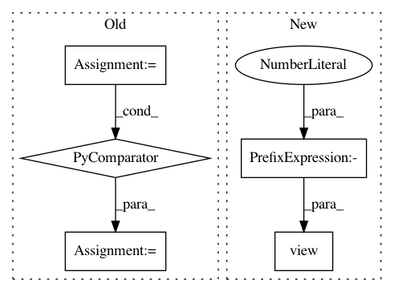

a277fd89980f7a4647d0a17548aba7df37a5aefb,pyprob/nn/inference_network_feedforward.py,InferenceNetworkFeedForward,infer_trace_init,#InferenceNetworkFeedForward#Any#,159
Before Change
def infer_trace_init(self, observe=None):
self._infer_observe = observe
self._infer_observe_embedding = self._embed_observe({name: util.to_tensor(v) for name, v in observe.items()})
def infer_trace_step(self, variable, previous_variable=None):
success = True
address = variable.address
After Change
self._infer_observe = observe
embedding = []
for name, layer in self._layer_observe_embedding.items():
value = util.to_tensor(observe[name]).view(1, -1)
embedding.append(layer(value))
embedding = torch.cat(embedding, dim=1)
self._infer_observe_embedding = self._layer_observe_embedding_final(embedding)
In pattern: SUPERPATTERN
Frequency: 4
Non-data size: 5
Instances
Project Name: pyprob/pyprob
Commit Name: a277fd89980f7a4647d0a17548aba7df37a5aefb
Time: 2018-09-19
Author: atilimgunes.baydin@gmail.com
File Name: pyprob/nn/inference_network_feedforward.py
Class Name: InferenceNetworkFeedForward
Method Name: infer_trace_init
Project Name: rusty1s/pytorch_geometric
Commit Name: c0458f0c0fb84c27570d91c6a971e29109649fca
Time: 2020-01-06
Author: matthias.fey@tu-dortmund.de
File Name: torch_geometric/utils/convert.py
Class Name:
Method Name: from_networkx
Project Name: kevinzakka/recurrent-visual-attention
Commit Name: 520e8fb57b890a7249334d9e90c9ad209d0b849f
Time: 2018-02-10
Author: kevinarmandzakka@gmail.com
File Name: modules.py
Class Name: retina
Method Name: foveate
Project Name: pytorch/pytorch
Commit Name: 2d75346c25f5fa6fa1bbd3f04243789829cf5c4f
Time: 2021-02-23
Author: jmshpocket@fb.com
File Name: torch/distributed/algorithms/ddp_comm_hooks/powerSGD_hook.py
Class Name:
Method Name: powerSGD_hook